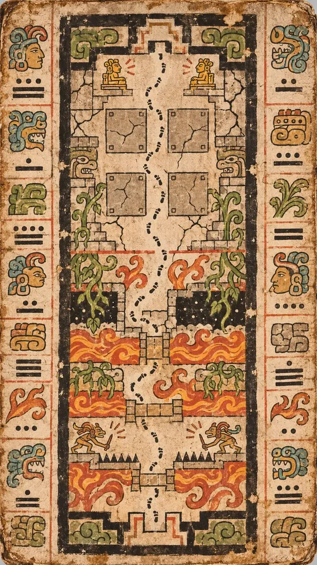
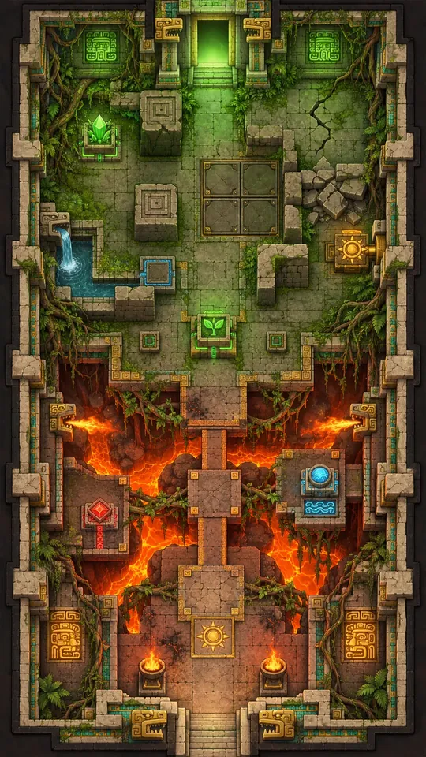
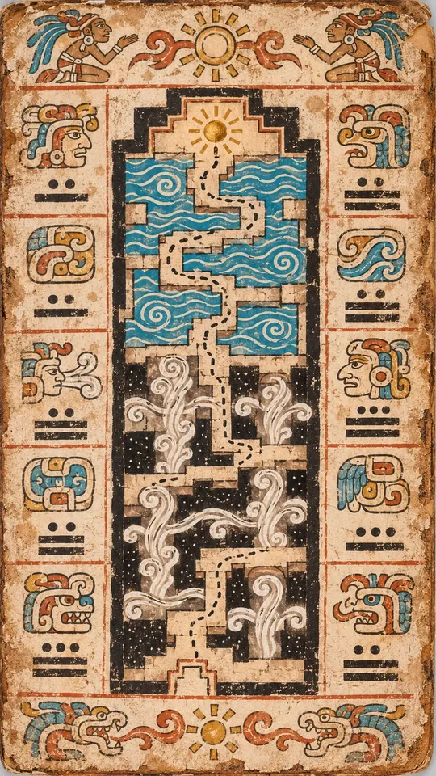
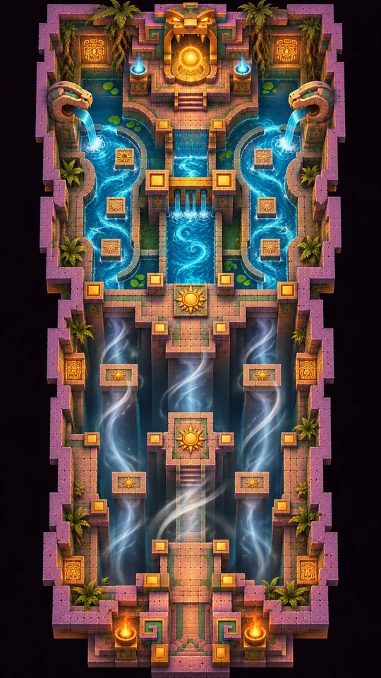
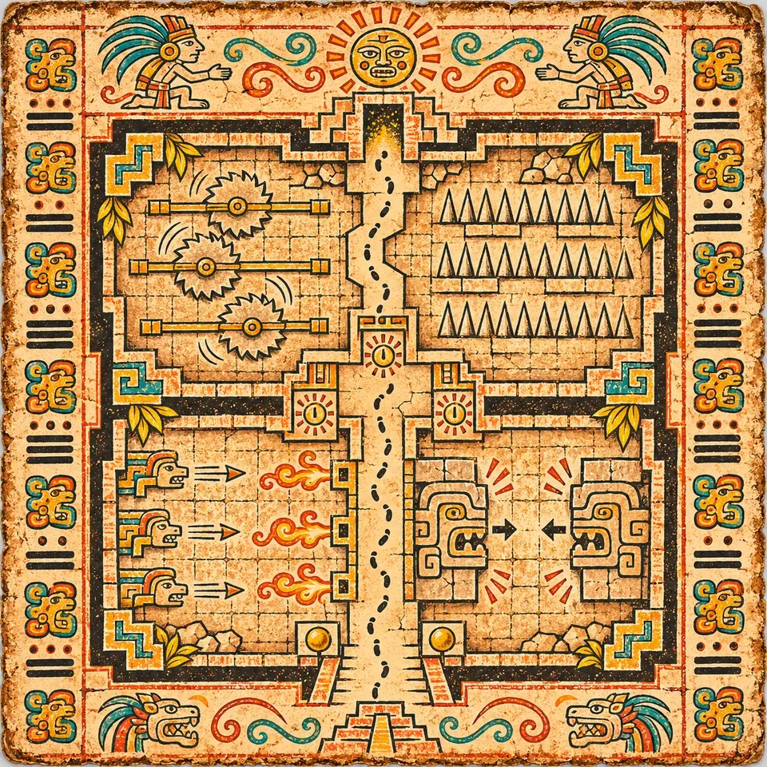
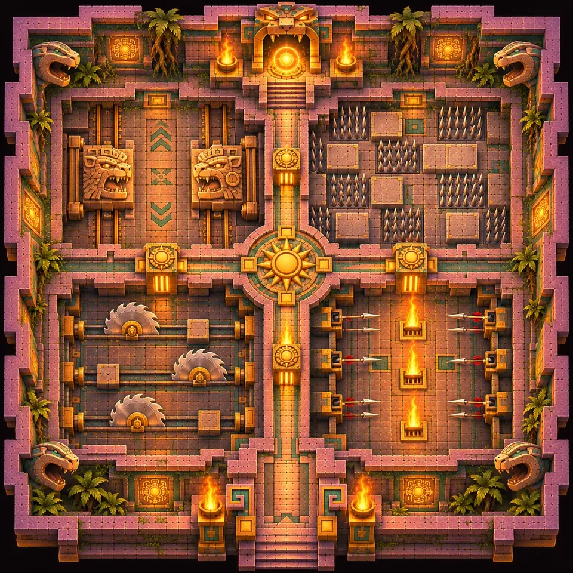
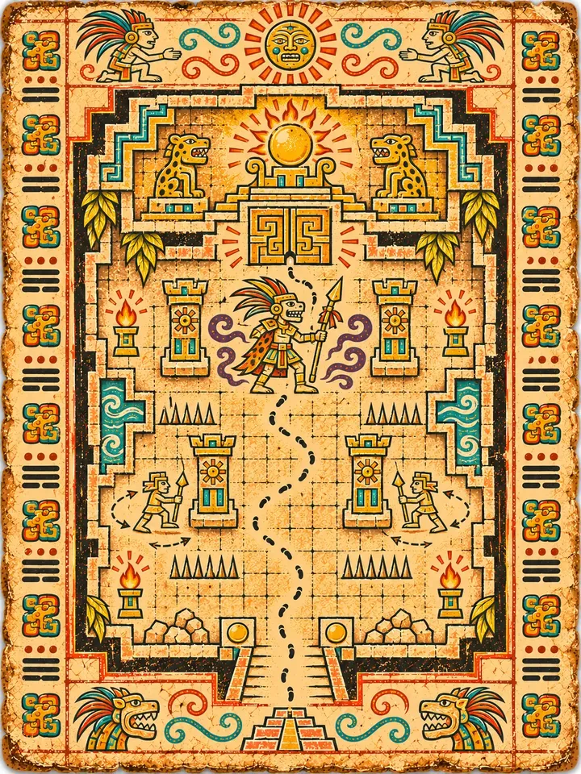
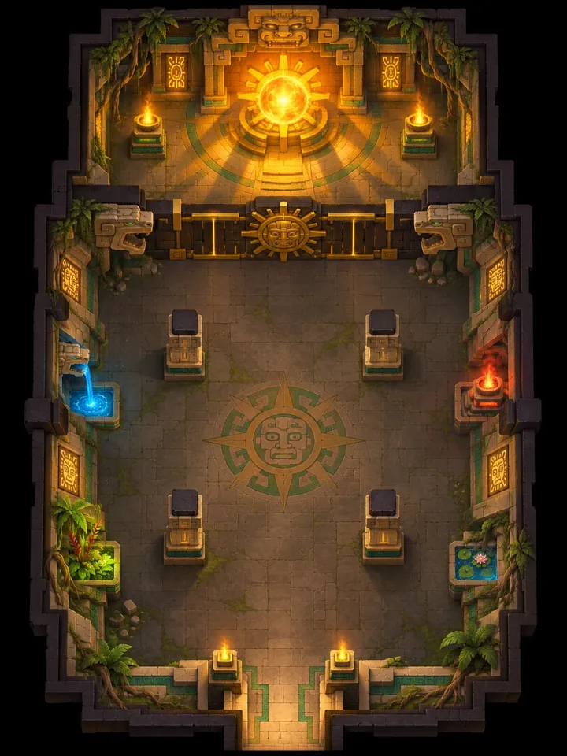
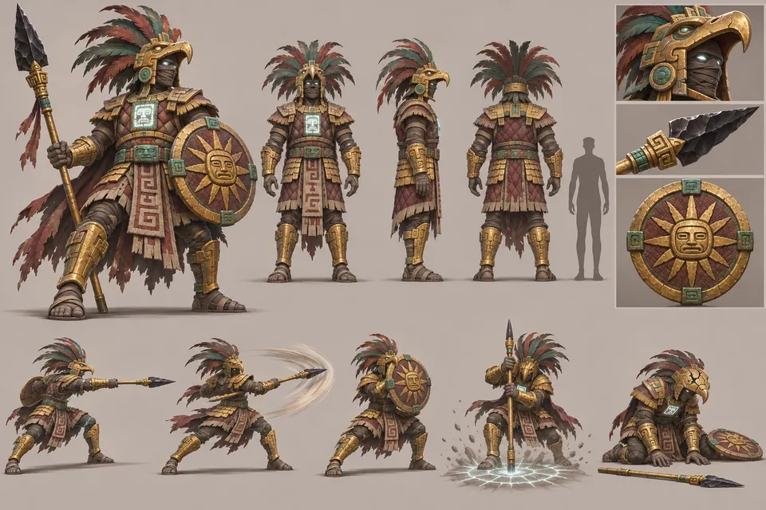

T6A
Spießrutenlauf I
Ein Feuerabschnitt mit brennenden Ranken und Lavabrücken, dann ein Erdabschnitt mit zerschmetterten Wänden und schweren Platten.




Der Aufstieg
Die letzten vier Ebenen: jedes Element, jede Falle, die Sonnenkugel und der Weg lebend hinaus.
„Eine einzige Kugel wählte die Erinnerung statt der Macht.“
K'in
Alles, was du gelernt hast, wird auf einmal geprüft. Der Spießrutenlauf verlangt alle vier Kugeln auf einer Route, der Schmelztiegel wirft dir jede Falle entgegen und stellt deinen Meißel ein letztes Mal auf die Probe, und der Leutnant des Priesters bewacht das Gewölbe der Sonnenkugel. Dann musst du sie hinaustragen.
T6A
Ein Feuerabschnitt mit brennenden Ranken und Lavabrücken, dann ein Erdabschnitt mit zerschmetterten Wänden und schweren Platten.


T6B
Ein Windabschnitt mit Böen und Aufwinden, dann ein Wasserabschnitt, in dem du das Wasser teilst und auf den Strömungen reitest.


Danach die Portalkammer, und weiter nach oben.
T6C
Alle Fallen des Tempels auf einmal, in vier Quadranten: Sägen, Stacheln, Pfeile und Feuerstrahlen sowie zermalmende Wände, mit Zeittüren dazwischen. Meißle nach, was du kannst, und lass sie deine Arbeit tun.


Danach die Portalkammer, und weiter nach oben.
T6D
Der Leutnant des Priesters, ein gepanzerter Kriegerpriester mit Adlerhelm und Obsidianspeer, hat dich auf dem Weg nach oben dreimal überfallen und ist jedes Mal gegangen. Er bewacht das Gewölbe der Sonnenkugel, und diesmal geht er nicht.



Das Gewölbe öffnet sich, und die Sonnenkugel gehört dir. Jetzt musst du sie hinausbringen.
LAST
Die Sonnenkugel zu tragen ist das Schwerste, was du je getan hast. Du leuchtest, und Schatten versteckt dich nicht. Jedes Wächterauge im Tempel ist wach. Es gibt keinen Rastplatz und keinen Schrein, nur ein Becken auf halbem Weg. Stirbst du, kehrt die Kugel in ihr Gewölbe zurück.
Alles kehrt für einen letzten Aufstieg zurück: die lange Treppe mit einem Geist im Rücken, eine Halle voller riesiger Gesichter, ein letzter Kalender und ein Spiegelgang. K'in hört auf dieser Ebene auf zu sprechen, zum ersten Mal, seit du sie getroffen hast.
Tageslicht und die Tore zum Himmelsaltar.

Das hellste Objekt im Spiel, gebettet in eine Wiege aus vier gemeißelten Händen. Du trägst sie die letzte Treppe hinauf zum Himmelsaltar.

T6-01

T6-02

T6-03